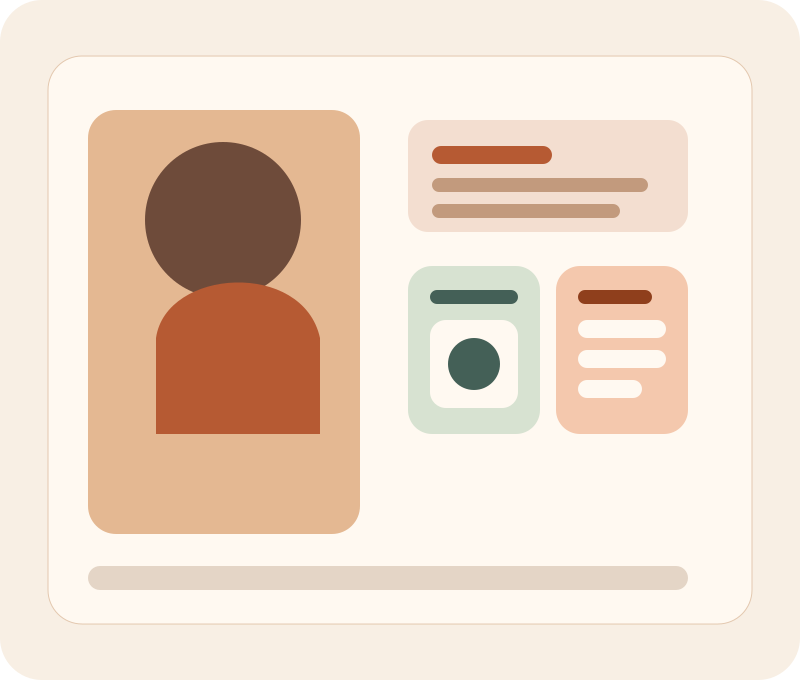

Design with intention
I enjoy translating user needs into layouts that feel calm, readable, and easy to navigate across screen sizes.
Framework Portfolio Capstone
I am Lan Nguyen, a front-end learner focused on accessible interfaces, thoughtful responsive design, and storytelling through layout. This portfolio demonstrates a Bootstrap-based workflow with custom styling, semantic HTML, and progressive enhancement.

Story
I enjoy translating user needs into layouts that feel calm, readable, and easy to navigate across screen sizes.
Mobile, tablet, and desktop each get their own layout decisions rather than simply shrinking the same interface.
Clear headings, strong color contrast, keyboard-friendly controls, and reduced-motion support are part of the foundation.
The work includes content strategy, layout decisions, front-end implementation, and a documented set of “extras” for the course rubric.
Course alignment
Every page uses landmark regions including header, nav, main, section, article, and footer.
Bootstrap powers the grid, navigation, carousel, buttons, modal, and utility classes.
Distinct mobile, tablet, and large-screen layouts are created with custom breakpoints.
Interactive filters, theme persistence, contact validation, motion preferences, and gallery features.
Beyond the basics
I made the enhancements visible in the interface so reviewers can quickly verify that this is more than a default framework layout.
The theme button saves the selected color mode with localStorage.
Projects can be filtered by category and switched between grid and list layouts using JavaScript.
Skip link, ARIA live regions, manual carousel, visible focus states, and reduced-motion support.
The footer stays consistent across short and tall pages, and the site has distinct mobile, tablet, and large-screen layouts.
The gallery page includes a manual Bootstrap carousel and modal image previews with custom captions.
Contact
This demo form uses client-side validation and an ARIA live region to confirm a successful message. It is included as one of the capstone enhancement features.